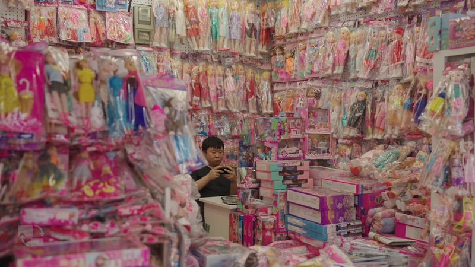
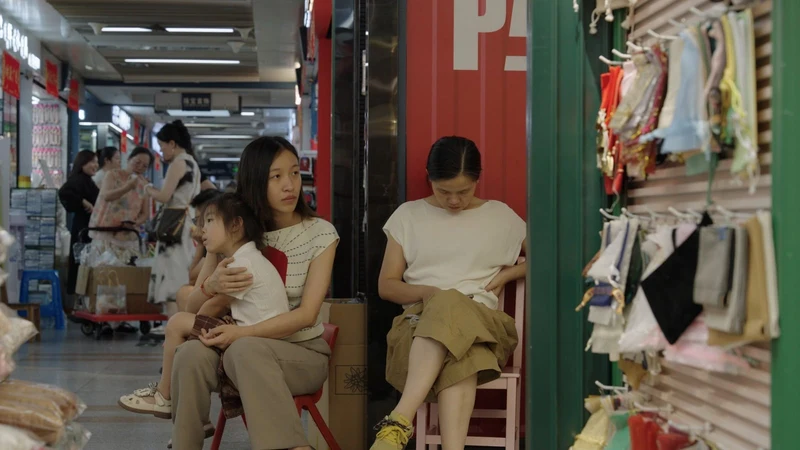
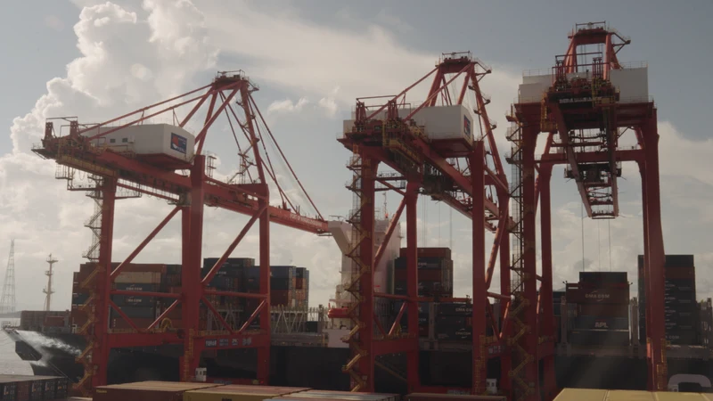
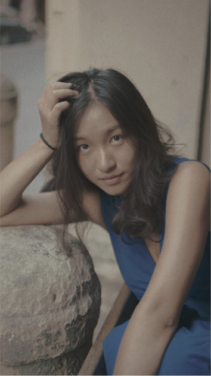

01 / FEATURE DOCUMENTARY
Goodbye, Yiwu (wt)
再见，义乌

Logline:
After 18 years apart from her mother, Lecun returns to Yiwu, her childhood wonderland and the world’s largest market, to capture a panorama of women’s lives behind global trade. As she uncovers the hidden sacrifices of motherhood, she must also confront the truth behind her own left-behind childhood.
Supported By:
- 2026-27 Firelight Documentary Lab
- 2026 CNEX Chinese Doc Forum 17 | IFG 6
Winner of AIDC Award and IFG Best Potential on Impact Making First Prize - 2026 FIRST International Film Festival Documentary Lab
西宁FIRST青年电影节 纪录片实验室 - 2026 A-Doc Allies Program
- 2026 Fusion Film Festival Docs in the Works
Winner of Best Pitch Award
Stills:




Director:

Elena Lecun Xiang is a documentary filmmaker/editor based in New York City. Her work offers sensitive, emotionally resonant explorations of topics such as gender and immigration.
Her debut short, The Acupuncturist (2025), published by amNewYork, follows a Chinese acupuncturist advocating for immigrant healthcare and insurance reform in New York. Her feature in development, Goodbye, Yiwu (working title) has won the AIDC Award and IFG Best Potential on Impact Making First Prize at the 2026 CNEX Chinese Doc Forum, and Best Pitch at the 2026 Fusion Film Festival. It was also selected for the 2026 FIRST Documentary Lab and A-Doc Allies Program.
A graduate of NYU’s News & Documentary program, Elena has received recognition and support from the Video Consortium × Sony University Initiative Camera Contest, Asian American Journalism Association’s Jeannie Park Grant, and various grants from New York University.
Press:
- https://www.aidc.com.au/aidc-presents-pitch-prizes-at-apac-documentary-forums-docs-by-the-sea-dmz-docs-industry-and-ccdf/ (opens in a new tab)
- https://ccdf.cnexdoc.com/zh-tw/news/5891/ (opens in a new tab)
- https://www.firstfilm.org.cn/production-cultivation/documentary-lab/select-projects/10thedition/ (opens in a new tab)
- https://www.canva.com/design/DAHJrZd2UlY/Xl4a7Eu-U4Uqu4rIwPyi3A/view (opens in a new tab)
- https://wp.nyu.edu/tischschoolofthearts-fusionfilmfestival/ (opens in a new tab)